Sharing Moments
- 3 gangen
- 37,50
- 4 gangen
- 46,50
Foodbar in Hilvarenbeek. Groenten uit eigen moestuin, eerlijke producten uit de omgeving en een open keuken waar je alles ziet gebeuren.
Donderdag t/m zondag vanaf 17:00
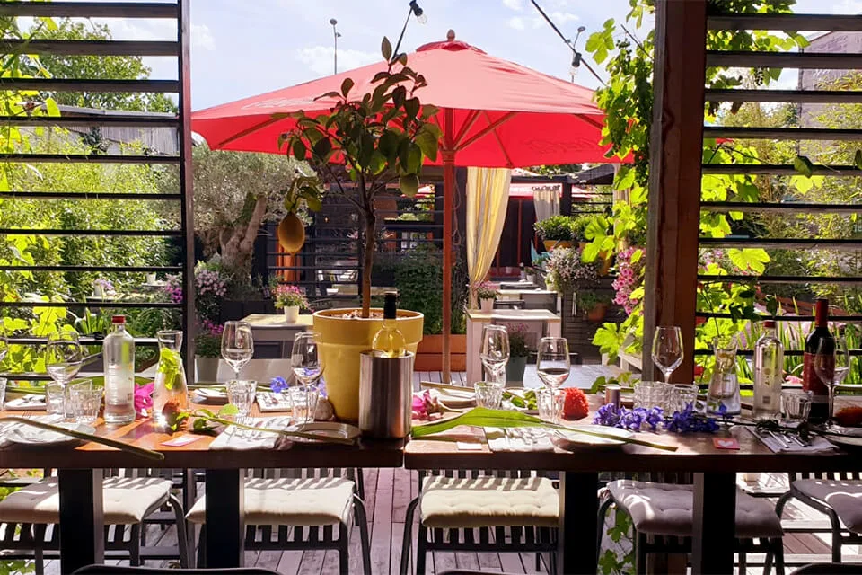
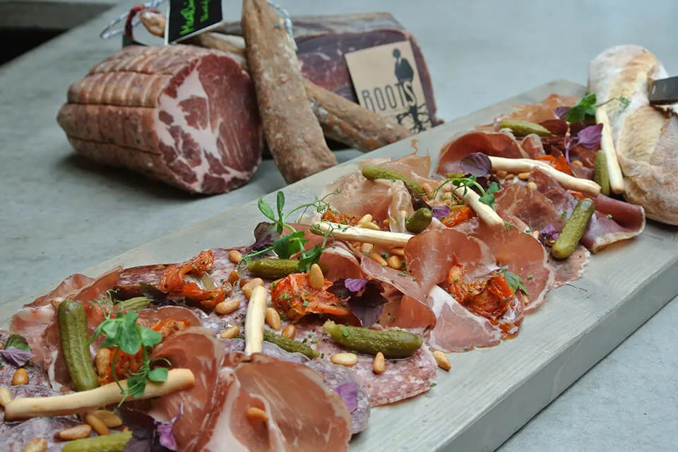
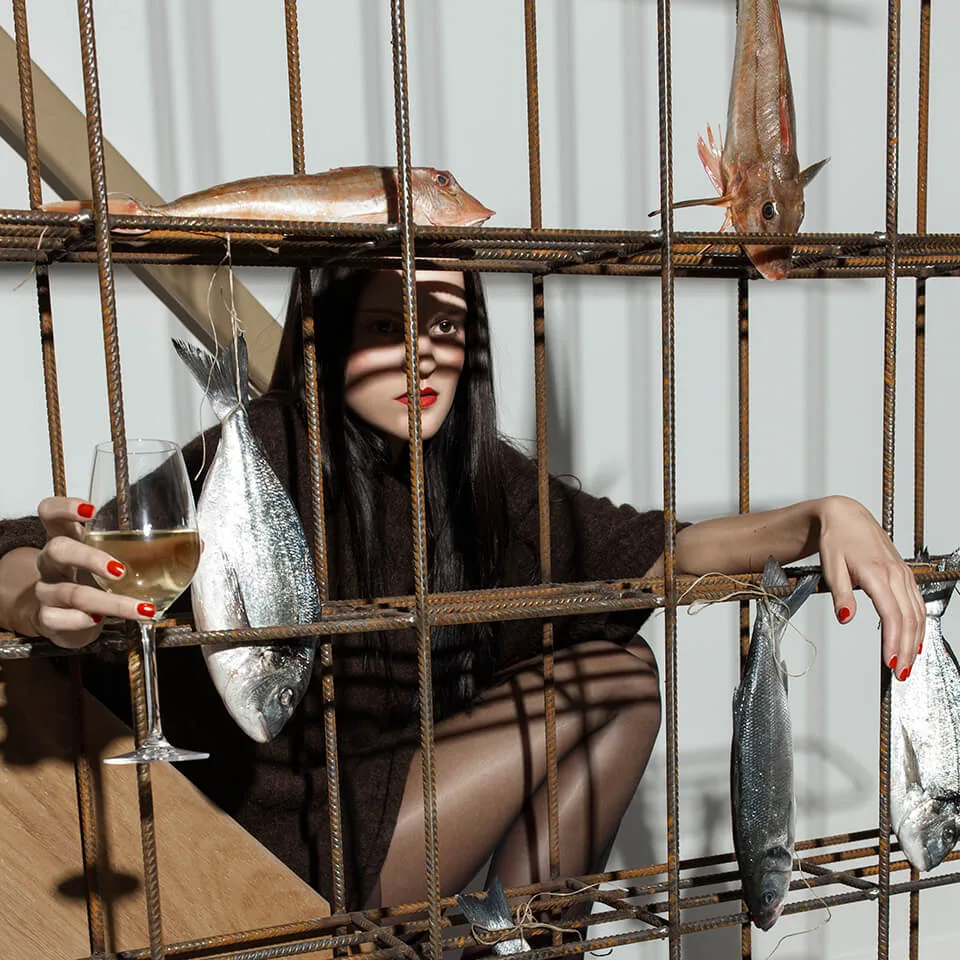
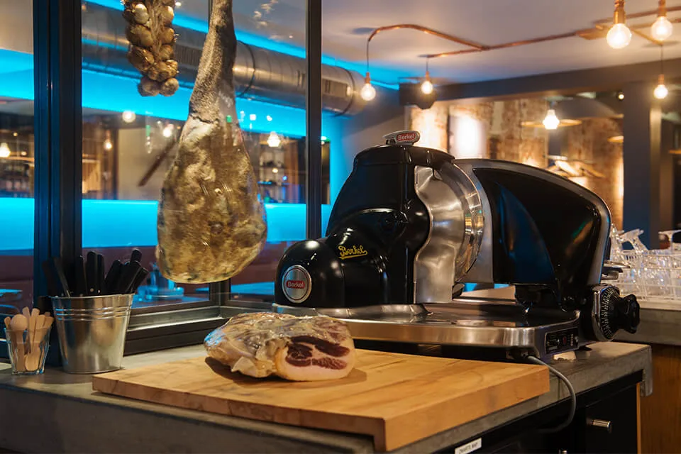
Roots staat voor een gevoel van thuiskomen in een eigentijdse bar & restaurant. Met groenten uit eigen moestuin en eerlijke producten uit de omgeving.
Dit alles in een informele sfeer in een transparante omgeving met open keuken waar je alle processen kan volgen. Zodat we al uw zintuigen kunnen prikkelen.
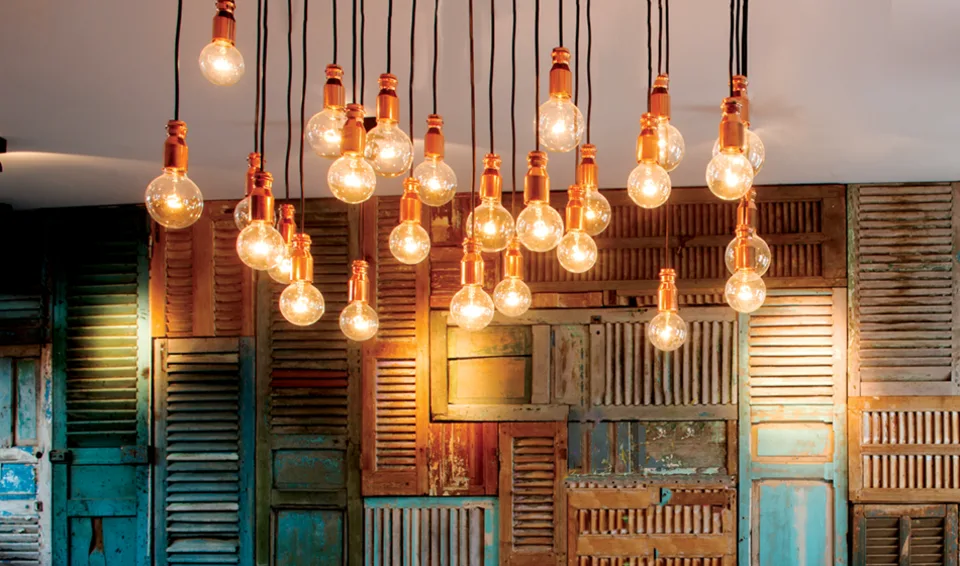
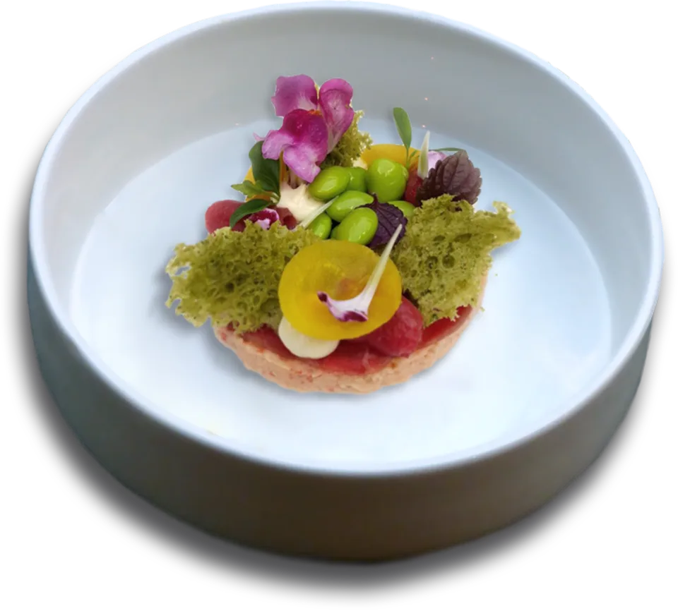
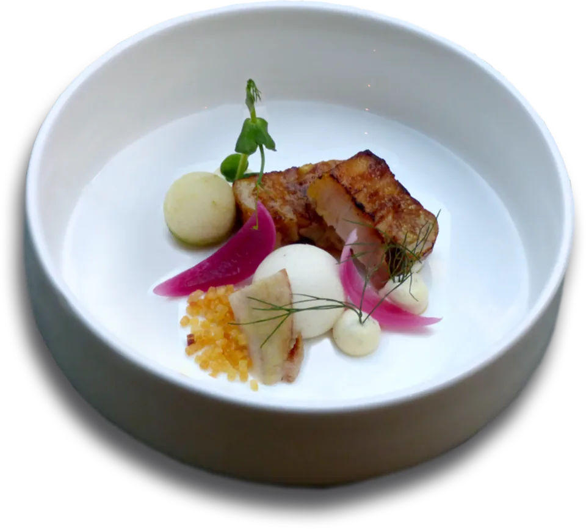
De lekkerste gerechtjes die je van ons gewend bent, in een nieuw jasje gestoken. Maar ook een scala aan nieuwe gerechten.
Lekker genieten van 3 of 4 gangen shared dining: gerechten in verschillende rondes op het midden van de tafel, in je eigen tempo. Of kies het Chefs Experience menu: ieder een bordje voor zichzelf per gang, waarbij de chef je culinair verrast.
v vegetarisch. Prijzen in euro.
Bij FrietboutiQ houden we van friet. Van écht verse en ambachtelijke friet welteverstaan. Zonder bewerkingen, toevoegingen en andere vreemde fratsen. Eerlijke friet dus.
Maar nog meer houden wij van onze toppings, die vinden wij pas echt kneiter sexy! De heerlijkste recepten, vers uit eigen keuken. Onze snacks zijn niet standaard: "guilty pleasure voor de vette bek".
Verse frieten moeten direct gegeten worden. Dus niet met z'n allen op elkaar in een bak of kleffe zak, maar gewoon hier aan tafel onder het genot van een lekker glaasje. Wil je ons toch meenemen? Verpak ons dan op je eigen gemak.
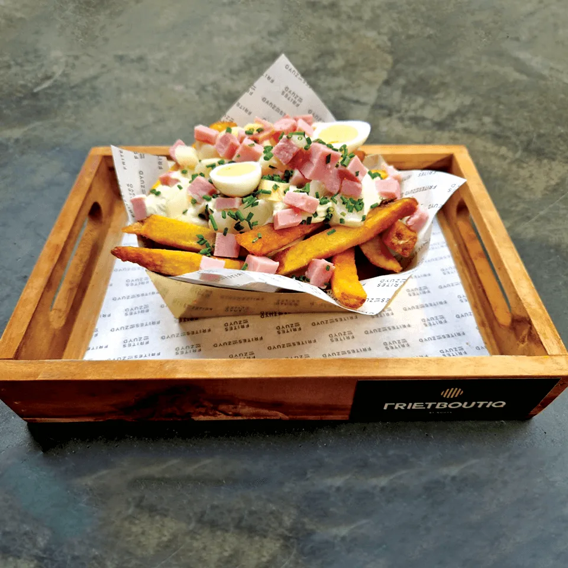
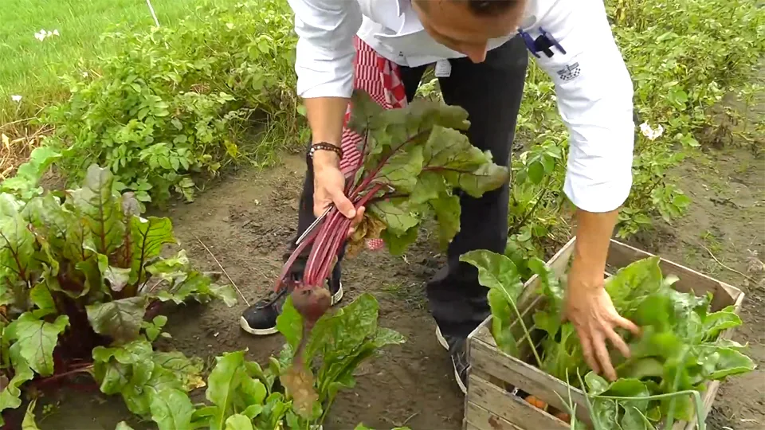
We staan voor mooie pure producten. Daarom zijn we constant op zoek naar de beste ingrediënten en heeft Roots zijn eigen mini farm.
In Diessen kweken we onze eigen groenten, kruiden en eetbare bloemetjes. Volledig biologisch en daarmee hartstikke vers. Ook laten we hier onze scharrelkippetjes de mooiste graantjes pikken. Daarvan is onder andere onze aioli gemaakt: heerlijk romig en vol van smaak.
De liefde die we erin stoppen proef je terug op je bord.
Stap in onze culinaire wereld en beleef Roots.
Dat we meer doen dan alleen je smaakpupillen prikkelen, laten we graag zien op onze speciale Roots Diningclub-avonden: een complete beleving waarbij alle zintuigen aan het werk worden gezet. Hou onze website en socials in de gaten voor deze speciale avonden bij Roots Foodbar.
De smaaksensatie die je ervaart op je bord trekken we graag door in alles wat we doen. Creativiteit en samenhang vinden wij belangrijk, en dat zie je terug in ons interieur, ons zonovergoten terras en in alle uitingen die we naar buiten brengen. Tot snel!
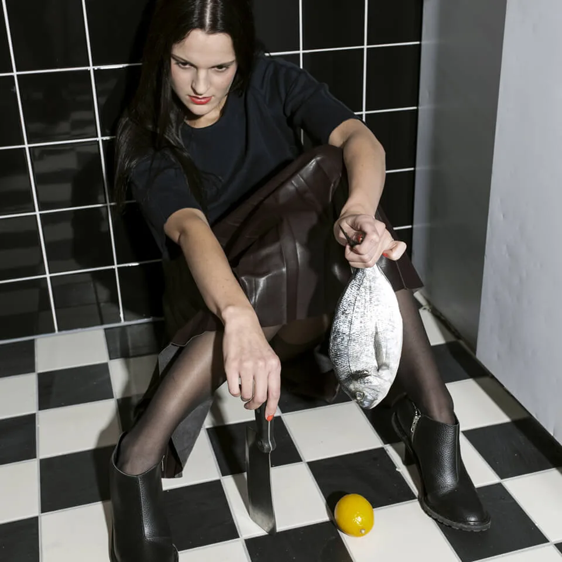
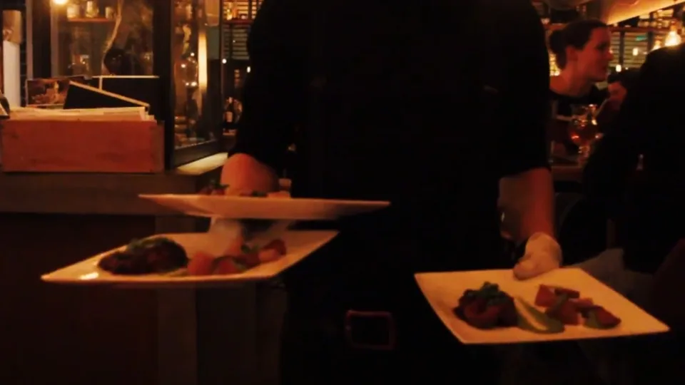
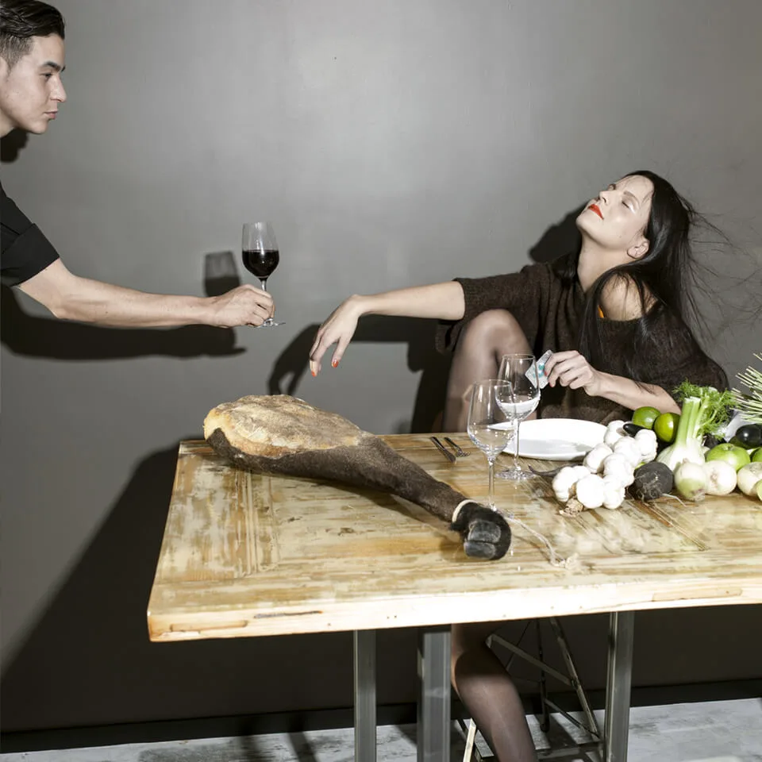
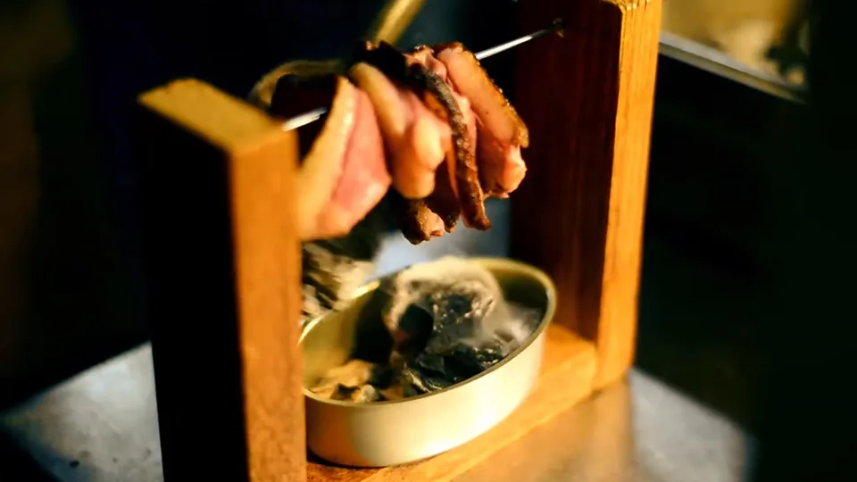
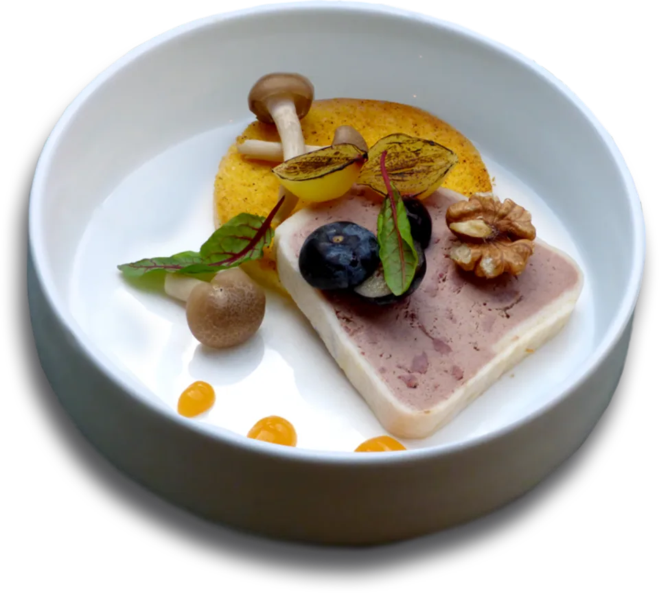
Kom tijdens de kerstdagen samen culinair genieten in de mooiste sferen van ons Roots Diningclub-concept.
Gastvrije ontvangst met heerlijke amuses, mooie tafelbereidingen en een pre-dessert van het huis. Het kerstmenu volgt spoedig.
Er zijn nog een beperkt aantal tafels beschikbaar. Bel voor meer informatie.
Bel 013 505 2290Heb je speciale wensen? Laat het ons gerust weten.
Reserveren doe je het snelst even telefonisch. Mailen kan natuurlijk ook.
Roots Foodbar| Maandag | gesloten |
|---|---|
| Dinsdag | gesloten |
| Woensdag | gesloten |
| Donderdag | vanaf 17:00 |
| Vrijdag | vanaf 17:00 |
| Zaterdag | vanaf 17:00 |
| Zondag | vanaf 17:00 |
Op maandag t/m woensdag zijn we voor gezelschappen vanaf 10 personen op afspraak open.